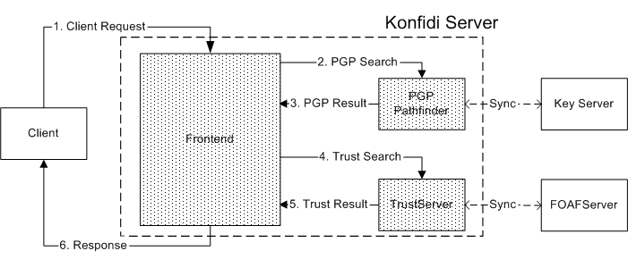

Konfidi
Stopping Spam with Trust Networks
Dave Brondsema
Andy Schamp
www.konfidi.org/presentations
Motivation: Stopping Spam
dave
demo: email w/ headers
- Current Techniques
- Content-level (SpamAssassin, Bayesian)
- User-level (challenge-response)
- Domain-level (SPF, DomainKeys)
- Our idea
- User-level
- PGP signatures
- Trust values
Related Work
dave, andy - she's moved on to movie reviews, now
- SPF, IIM
- Jennifer Golbeck's TrustMail
Trust Network
andy - explain nodes and edges and direction
Identity Trust with PGP
dave
- Public/private keypairs
- keyservers
- web-of-trust
- multipart/signed emails
Topical Trust with RDF
andy - explain source and sink
difference kinds of trust (email)
leadin for FOAFServer
- Person A trusts Person B
- RDF
- XML markup
- FOAF subjects
- Trust schemas
- no servers
Topical Trust with RDF
andy
<Relationship>
<truster rdf:nodeID="alice123" />
<trusted>
<foaf:Person>
<foaf:name>Bob</foaf:name>
<wot:fingerprint>407CDD8D</wot:fingerprint>
</foaf:Person>
</trusted>
<about>
<Item>
<topic rdf:resource="#cooking" />
<rating>.95</rating>
</Item>
</about>
<about>
<Item>
<topic rdf:resource="#weather" />
<rating>.35</rating>
</Item>
</about>
</Relationship>
- Person A trusts Person B
- RDF
- XML markup
- FOAF subjects
- Trust schemas
- no servers
FOAFServer
dave
- Public server, like PGP keyserver
- Stores FOAF and related RDF data (e.g. trust)
- You must PGP sign your file
- Synchronization
System Architecture
andy

PGP Pathfinder
dave
- Verify identity before trust computation
- Use wotsap data files
TrustServer
andy
- Data synchronized from FOAFServer
- Models
- Distributed
- Relative to source
- Rating System
- Propagation Algorithm
Clients
dave
- PGP and Gnu Privacy Guard
- "Trust-o-matic" for FOAFServer
- Email clients
- Sign outgoing emails
- Validate incoming signatures
- Query Konfidi Server with PGP fingerprints of sender & recipient
- Add headers
- Filter - integrate with other techniques
Review System Architecture
andy
Implementation
dave
- Python - for fun
- Apache httpd server - admin-ability
- mod_python
- Protocol: REST architecture
- Basic functionality completed in all areas
Other Applications
andy - good strangers
- Digital communication in general
- wiki spam
- blog spam
- phishing
- P2P online sales (eBay)
Other Applications
dave
Websites
- e.g. Vander Linden writes and signs pages about AI
- Topic hierarchy AI ⇒ CS ⇒ Science
- Apache module to serve multipart/signed if browser supports it
- Firefox plugin to handle multipart/signed
Website filtering
- last trusted subject is a URL
Social Issues
andy
- No anonymous communication
- Deployment - explaining PGP, etc
- Scumbags
- Global network of users
Future work
dave & andy
- Security & usability
- Email plugins, webmail
- FOAFServer synch
- Topic hierarchy
- Trust Server: test strategies
- Trust-o-matic
Conclusion
andy
- A huge invitation-only network
- Relative to each participant and responsive to problems
- Integrate with existing spam filters until widespread
Demo
- show keys on keyserver
- show FOAFs
- sign & add Dave's FOAF
- show trustserver query
-
- send emails to dave, show client
Thank You